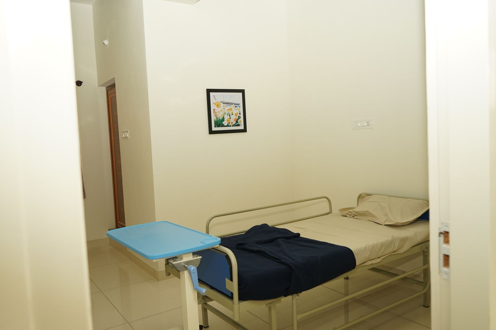

Dignity first
We protect the independence, privacy and preferences of every person in our care.
Carewise was founded to give Mysuru's families a place where ageing parents receive medical excellence and genuine warmth, at our centre or at home.


Six years ago we opened our doors with a simple belief: nobody should face illness or old age without comfort, dignity and expert medical support close at hand.
Today Carewise runs a fully equipped care centre in Mysuru and a home healthcare service trusted by families in Mysuru, Bengaluru and abroad.
We protect the independence, privacy and preferences of every person in our care.
Experienced doctors set the protocols; trained nurses and therapists follow them precisely.
Families receive daily updates and straight answers, wherever in the world they live.
Clean, calm spaces, nutritious food and familiar routines help healing.
You stay part of every decision; we simply make it easier to carry.
Not just treating their condition. Celebrating their existence.
Carewise gave my father the dignity and medical care he needed when we couldn't manage at home. The staff treated him like family.
Living abroad, I was constantly worried about my mother's post-stroke recovery. The daily updates kept me connected and at peace.
The palliative care team didn't just manage the pain. They brought a sense of calm to our entire family during a difficult time.
After Amma's hip surgery the physiotherapists came home every day. Within six weeks she was walking to the temple again.
I could speak to the doctor on a video call every week. For a family living abroad, that kind of access means everything.
My husband was on BiPAP support for months. The nurses were patient, skilled and always explained what they were doing.
The private room felt like home, not a hospital. Appa had his own routine, his favourite food and people who knew his name.
Dementia care is hard to find done well. Carewise kept my grandmother safe and calm, and kept us informed every single day.
Carewise gave my father the dignity and medical care he needed when we couldn't manage at home. The staff treated him like family.
Living abroad, I was constantly worried about my mother's post-stroke recovery. The daily updates kept me connected and at peace.
The palliative care team didn't just manage the pain. They brought a sense of calm to our entire family during a difficult time.
After Amma's hip surgery the physiotherapists came home every day. Within six weeks she was walking to the temple again.
I could speak to the doctor on a video call every week. For a family living abroad, that kind of access means everything.
My husband was on BiPAP support for months. The nurses were patient, skilled and always explained what they were doing.
The private room felt like home, not a hospital. Appa had his own routine, his favourite food and people who knew his name.
Dementia care is hard to find done well. Carewise kept my grandmother safe and calm, and kept us informed every single day.
Visit our centre, meet the team or speak to us about your parent's needs.